RÉSUMÉ DES CARACTÉRISTIQUES DU PRODUIT
ANSM - Mis à jour le : 14/10/2011
ANAPEN 0,50 mg/0,3 ml, solution injectable en seringue pré-remplie
2. COMPOSITION QUALITATIVE ET QUANTITATIVE
Adrénaline ...................................................................................................................................... 1,70 mg
Pour 1 ml.
Une dose de 0,3 ml contient 0,50 mg d'adrénaline.
Excipients: métabisulfite de sodium (E223), chlorure de sodium.
Pour la liste complète des excipients, voir rubrique 6.1.
Solution injectable.
Solution claire, incolore, pratiquement exempte de particules.
4.1. Indications thérapeutiques
Traitement d'urgence des symptômes du choc anaphylactique provoqué par les cacahuètes ou par d'autres aliments, médicaments, morsure ou piqûre d'insectes, autres allergènes, ainsi que du choc anaphylactique idiopathique ou induit par un exercice physique.
4.2. Posologie et mode d'administration
Voie intramusculaire uniquement.
ANAPEN est constitué d'une seringue préremplie d'adrénaline contenue dans un dispositif d'auto-injection. Le tout constitue un auto-injecteur.
L'injection d'ANAPEN doit être effectuée en intra-musculaire, sans attendre, dès l'apparition des signes précurseurs et symptômes du choc anaphylactique. Ceux-ci peuvent survenir dans les minutes qui suivent l'exposition à l'allergène. Ils se manifestent le plus souvent par une urticaire, des bouffées de chaleur ou un angio-œdème. Des réactions plus sévères peuvent toucher les systèmes circulatoire et pulmonaire.
Injecter ANAPEN uniquement dans la face antéro-latérale de la cuisse et non dans le muscle fessier. La zone d'injection peut être massée légèrement pendant 10 secondes après l'administration.
La dose habituellement efficace se situe entre 0,005 à 0,01 mg/kg mais des doses supérieures peuvent être nécessaires dans certains cas.
Utilisation chez l'adulte:
La dose usuelle est de 300 microgrammes.
Un adulte de poids élevé peut nécessiter d'une dose de 500 microgrammes d'ANAPEN pour inverser les effets d'une réaction allergique.
Dans certaines circonstances, une dose unique d'adrénaline peut ne pas suffire à inverser les effets d'une réaction allergique aiguë. Chez ces patients, une nouvelle dose peut être injectée après un délai de 10 à 15 minutes.
Utilisation chez l'enfant:
L'utilisation d'ANAPEN 0,50 mg/0,3 ml, solution injectable en seringue pré-remplie n'est pas recommandée pour les enfants.
L'auto-injecteur ANAPEN est destiné à l'auto administration immédiate par une personne présentant un antécédent de réaction anaphylactique. Il est conçu pour délivrer une dose unique de 500 microgrammes (0,3 ml) d'adrénaline. Pour des raisons de stabilité, un volume de 0,75 ml reste inutilisé dans la seringue après l'utilisation. Cependant le dispositif ne doit pas être réutilisé et doit être jeté avec les précautions de sécurité qui s'imposent.
Hypersensibilité à l'adrénaline ou à l'un des excipients (voir rubrique 4.4 pour plus d'informations sur les sulfites).
4.4. Mises en garde spéciales et précautions d'emploi
Chez les patients sensibilisés au sulfite, en particulier chez les asthmatiques, Anapen peut provoquer des réactions de type allergique (symptômes anaphylactique, bronchospasme). Les patients susceptibles de présenter ces réactions doivent être parfaitement informés des circonstances dans lesquelles Anapen doit être utilisé.
Tous les patients pour lesquels ANAPEN a été prescrit doivent être parfaitement informés et comprendre correctement les indications et les conditions d'utilisation du dispositif. ANAPEN est uniquement indiqué comme traitement d'urgence. Un suivi médical est indispensable après administration.
· Utiliser avec précaution chez les patients présentant une pathologie cardiaque, c'est-à-dire une maladie coronaire, une atteinte myocardique (déclenchement possible d'angine de poitrine), une insuffisance ventriculaire droite, des troubles du rythme cardiaque ou une tachycardie;
· Après administration d'adrénaline, des effets secondaires peuvent survenir chez des patients hyperthyroïdiens, cardiaques (angine de poitrine sévère, cardiomyopathie obstructive, arythmie ventriculaire et hypertension), souffrant de phéochromocytome, de glaucome, d'insuffisance rénale sévère, d'adénome prostatique avec rétention d'urine, d'hypercalcémie, d'hypokaliémie, chez les diabétiques, les personnes âgées et les femmes enceintes;
· Des injections locales répétées peuvent provoquer une nécrose au niveau des points d'injection par vasoconstriction;
· Une injection intra-vasculaire accidentelle peut entraîner une hémorragie cérébrale suite à une augmentation de la pression artérielle;
· Une injection accidentelle dans la main ou le pied peut par vasoconstriction provoquer un défaut d'irrigation sanguine de l'extrémité du membre concerné.
Ce médicament contient du sodium. Le taux de sodium est inférieur à 1 mmol par dose c'est-à-dire « sans sodium »..
4.5. Interactions avec d'autres médicaments et autres formes d'interactions
Les effets de l'adrénaline peuvent être potentialisés par les antidépresseurs tricycliques, les antidépresseurs sérotoninergiques-noradrénergiques comme la venlafaxine, la sibutramine ou le milnacipran et les inhibiteurs de la monoamine oxydase (augmentation brusque de la pression artérielle et risque d'arythmie), les agents bloquants COMT, les hormones thyroïdiennes, la théophylline, l'oxytocine, les parasympatholytiques, certains antihistaminiques (diphenhydramine, chlorphéniramine), le lévodopa et l'alcool.
Une hypertension artérielle sévère et une bradycardie peuvent se produire lorsque l'adrénaline est administrée en association avec des médicaments bêtabloquants non sélectifs.
L'association à des médicaments sympathomimétiques peut potentialiser les effets de l'adrénaline.
Utiliser ANAPEN avec précaution chez les patients recevant un traitement pouvant favoriser une arythmie, par exemple: les digitaliques, la quinidine, les anesthésiques halogénés.
Les effets vasopresseurs de l'adrénaline peuvent être annulés par l'administration de vasodilatateurs à action rapide ou de médicaments bloquant les récepteurs alpha adrénergiques.
Les effets anti-anaphylactiques peuvent être antagonisés par des agents bêta-bloquants, en particulier les bêta-bloquants non sélectifs.
L'adrénaline inhibant la sécrétion d'insuline, il peut être nécessaire d'ajuster le traitement par l'insuline ou d'autres traitements hypoglycémiants.
Aucune étude spécifique, contrôlée n'est disponible chez la femme enceinte.
L'adrénaline ne doit être utilisée chez la femme enceinte que si le bénéfice attendu justifie le risque potentiel pour le fœtus.
L'adrénaline peut diminuer, de manière importante, le flux sanguin placentaire, ce qui peut aussi se produire lors d'un choc anaphylactique.
L'adrénaline n'est pas biodisponible par voie orale; l'adrénaline excrétée dans le lait maternel ne devrait pas avoir d'effet chez le nourrisson.
4.7. Effets sur l'aptitude à conduire des véhicules et à utiliser des machines
En raison des symptômes consécutifs au choc anaphylactique, la conduite ou l'utilisation des machines n'est pas recommandée après l'administration d'adrénaline.
Les effets indésirables dépendent de la sensibilité individuelle du patient et de la dose administrée.
A faible dose, les effets indésirables fréquents sont: palpitations, tachycardie, sueurs, nausées, vomissements, difficultés respiratoires, pâleur, étourdissements, faiblesse, tremblements, céphalées, inquiétude, nervosité, anxiété, refroidissement des extrémités.
Les effets moins fréquents sont: hallucinations, syncopes, hyperglycémie, hypokaliémie, acidose métabolique, mydriase, difficulté mictionnelle avec rétention urinaire, tremblements musculaires.
A forte dose ou chez les patients sensibles à l'adrénaline, les effets indésirables sont: arythmie cardiaque (fibrillation ventriculaire/arrêt cardiaque), accès d'hypertension artérielle (provoquant parfois une hémorragie cérébrale), voire une vasoconstriction (par exemple cutanée, des muqueuses et des reins).
ANAPEN contient du métabisulfite de sodium et peut provoquer des réactions de type allergique dont des symptômes anaphylactiques voire un risque vital. Des crises d'asthme peu sévères chez certains patients sensibles au sulfite peuvent également se produire.
Un surdosage ou une injection intra-vasculaire accidentelle d'adrénaline peut provoquer une hémorragie cérébrale par augmentation brusque de la pression artérielle. La mort peut résulter d'un œdème pulmonaire aigu dû à la vasoconstriction périphérique et à la stimulation cardiaque.
Les effets vasopresseurs de l'adrénaline peuvent être antagonisés par l'administration de vasodilatateurs à action rapide ou de médicaments alpha-bloquants adrénergiques. Malgré ces mesures, en cas d'hypotension artérielle réactionnelle prolongée, il peut être nécessaire d'administrer un autre médicament vasopresseur tel que de la noradrénaline.
En cas de surdosage, un œdème pulmonaire aigu avec obstruction des voies respiratoires peut être traité par l'administration de médicaments alpha-bloquants adrénergiques à action rapide tel que la phentolamine et/ou la pratique de la ventilation assistée en pression positive.
Un surdosage d'adrénaline peut provoquer une bradycardie transitoire suivie d'une tachycardie pouvant conduire à une arythmie pouvant être fatale. Cette arythmie peut être traitée par l'administration de bêta-bloquants adrénergiques précédés ou associés à des alpha bloquants adrénergiques permettant de contrôler des effets circulatoires périphériques alpha adrénergiques.
5. PROPRIETES PHARMACOLOGIQUES
5.1. Propriétés pharmacodynamiques
Classe pharmacothérapeutique: AGENTS ADRENERGIQUES ET DOPAMINERGIQUES, adrénaline,
Code ATC: C01CA24.
L'adrénaline est une catécholamine naturellement secrétée par la médulo surrénale en réponse à l'épuisement ou au stress. C'est une amine sympathomimétique à action directe, ayant des effets aussi bien sur les récepteurs alpha que bêta adrénergiques et dont les effets sur les organes cibles sont complexes.
C'est le médicament de choix pour combattre les réactions d'hypersensibilité allergiques ou idiopathiques et l'anaphylaxie induite par l'effort.
L'adrénaline a une action vasoconstrictrice par stimulation alpha adrénergique importante. Elle permet de lutter contre la vasodilatation et l'excès de la perméabilité vasculaire responsables d'une perte liquidienne intravasculaire et une hypotension; symptômes pharmaco-toxiques prépondérants du choc anaphylactique. Par son action stimulante des récepteurs bronchiaux bêta adrénergiques, l'adrénaline provoque une puissante bronchodilatation diminuant le sifflement respiratoire et la dyspnée. L'adrénaline diminue également le prurit, l'urticaire et l'angiœdème associés au choc.
5.2. Propriétés pharmacocinétiques
L'adrénaline est rapidement inactivée dans l'organisme, principalement par les enzymes hépatiques COMT et MAO.
La majorité d'une dose d'adrénaline est excrétée sous forme de métabolites par voie urinaire.
La demi-vie plasmatique est d'environ 2 à 3 minutes. Cependant, administrée par voie sous-cutanée ou intramusculaire, la vasoconstriction locale peut légèrement retarder l'absorption et les effets peuvent durer plus longtemps que ne le suggère la demi-vie plasmatique.
5.3. Données de sécurité préclinique
L'adrénaline a été largement utilisée depuis des années pour le traitement des réactions anaphylactiques. Il n'existe pas d'autre donnée pré-clinique utile au prescripteur ne figurant pas déjà dans le RCP.
Chlorure de sodium, métabisulfite de sodium (E223), acide chlorhydrique (pour ajustement du pH), eau pour préparations injectables.
En l'absence d'études de compatibilité, ce médicament ne doit pas être mélangé avec d'autres médicaments.
2 ans.
6.4. Précautions particulières de conservation
A conserver à une température ne dépassant pas 25°C.
A conserver dans l'emballage extérieur d'origine, à l'abri de la lumière.
6.5. Nature et contenu de l'emballage extérieur
1 ml en seringue pré-remplie en verre (obturée à une extrémité par un piston de caoutchouc, l'autre extrémité se termine par la gaine protectrice de l'aiguille) contenue dans un dispositif d'auto-injection à usage unique. L'auto-injecteur délivre 0,3 ml de solution.
Seringue:
BD (Becton Dikinson): verre borosilicaté type 1, 27G 1/2"
Diaphragme:
BD (Becton Dikinson): chlorobutyl noir PH 701/50
Existe en boîte de 1 auto-injecteur.
6.6. Précautions particulières d’élimination et de manipulation
Mode d'emploi
A. Différentes parties de l'auto-injecteur ANAPEN:
Avant d'utiliser l'auto-injecteur ANAPEN, le patient doit connaître les différentes parties de l'auto-injecteur. Elles sont présentées dans le schéma:
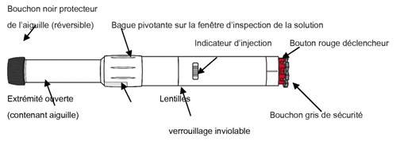
· Bague pivotante sur la fenêtre d'inspection de la solution: le patient tourne cette bague pour aligner les lentilles avec les fenêtres d'inspection de la solution.
· Fenêtre d'inspection de la solution: avant l'injection, le patient vérifie par cette fenêtre que la solution est claire et prête à l'emploi.
· Indicateur d'injection: avant l'injection, le patient peut observer par cette fenêtre un piston en plastique blanc qui indique que l'auto-injecteur Anapen n'a pas été déclenché par erreur ou altéré.
Après l'injection, l'indicateur d'injection devient rouge, ce qui indique que l'auto-injecteur Anapen s'est correctement déclenché.
· Bouchon noir protecteur de l'aiguille (réversible): ce bouchon protège l'aiguille lorsque le patient n'utilise pas l'auto-injecteur Anapen. Avant l'injection, le patient tire sur le bouchon protecteur de l'aiguille pour l'enlever. Après l'injection, le patient retourne le bouchon noir protecteur de l'aiguille et le replace sur la même extrémité de l'auto-injecteur Anapen afin de recouvrir l'aiguille.
· Bouchon gris de sécurité: il recouvre le bouton déclencheur rouge. Il empêche d'appuyer par erreur sur le bouton déclencheur.
Le patient ne doit pas retirer le bouchon noir protecteur de l'aiguille ou le bouchon gris de sécurité avant d'avoir besoin d'utiliser l'auto-injecteur ANAPEN.
B. Vérification de l'auto-injecteur ANAPEN
Avant d'utiliser l'auto-injecteur ANAPEN, le patient doit vérifier le dispositif en procédant comme suit:
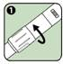1. Tourner la bague pivotante pour aligner les lentilles sur les fenêtres d'inspection de la solution comme indiqué par les flèches.
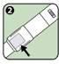2. Regarder par la fenêtre d'inspection de la solution. Vérifier que la solution est limpide et incolore.
Si la solution présente un aspect trouble, coloré ou contient des particules, l'auto-injecteur Anapen devra être jeté.
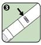3. S'assurer que l'indicateur d'injection n'est pas rouge. L'indicateur rouge signifie que l'auto-injecteur Anapen a déjà été déclenché et qu'il doit être jeté.
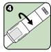4. Retourner la bague pivotante comme indiqué par les flèches pour s'assurer que les deux fenêtres d'inspection de la solution sont bien recouvertes. Replacer l'auto-injecteur ANAPEN dans son carton d'emballage jusqu'à ce qu'il ait besoin d'être utilisé.
C. Utilisation de l'auto-injecteur Anapen
Si le bouchon noir protecteur de l'aiguille a été retiré, le patient ne doit pas poser son pouce, ses doigts ou sa main sur l'extrémité ouverte (contenant l'aiguille) de l'auto-injecteur ANAPEN.
Pour utiliser l'auto-injecteur ANAPEN, le patient doit suivre les étapes suivantes:
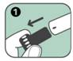1. Enlever le bouchon noir protecteur de l'aiguille en tirant fortement dans le sens de la flèche; cela permet également de retirer une gaine grise de protection de l'aiguille.
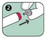2. Enlever le bouchon gris de sécurité du bouton rouge déclencheur en tirant dans le sens de la flèche.
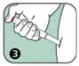3. Appuyer l'extrémité ouverte (contenant l'aiguille) de l'auto-injecteur Anapen sur la face externe de la cuisse. Il est possible d'utiliser Anapen à travers un vêtement léger, tel que du jean, du coton ou du polyester.
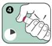4. Appuyer sur le bouton rouge déclencheur de façon à entendre un « clic ». Maintenir en position pendant 10 secondes. Retirer lentement l'auto-injecteur de la cuisse puis masser légèrement le site d'injection.
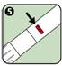5. L'indicateur d'injection est passé au rouge, ce qui indique que l'injection est terminée. Si l'indicateur d'injection n'est pas rouge, recommencer l'injection avec un autre auto-injecteur Anapen.
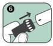6. Après l'injection, l'aiguille dépasse du dispositif. Pour la recouvrir, replacer la partie large du bouchon noir protecteur de l'aiguille en l'enclenchant sur l'extrémité ouverte (contenant l'aiguille) de l'auto-injecteur Anapen (comme indiqué par la flèche).
Consulter un médecin. Rapporter l'auto-injecteur Anapen utilisé à l'hôpital ou à la pharmacie pour une élimination adéquate.
7. TITULAIRE DE L’AUTORISATION DE MISE SUR LE MARCHE
LINCOLN MEDICAL LIMITED
UNIT 8 WILTON BUSINESS CENTRE
WILTON
SALISBURY SP2 0AH
ROYAUME UNI
8. NUMERO(S) D’AUTORISATION DE MISE SUR LE MARCHE
· 217 493-9 ou 34009 217 493 9 7: 1 ml en seringue pré-remplie (verre). Boîte de 1 auto-injecteur.
9. DATE DE PREMIERE AUTORISATION/DE RENOUVELLEMENT DE L’AUTORISATION
[à compléter par le titulaire]
10. DATE DE MISE A JOUR DU TEXTE
[à compléter par le titulaire]
Sans objet.
12. INSTRUCTIONS POUR LA PREPARATION DES RADIOPHARMACEUTIQUES
Sans objet.
Liste I.